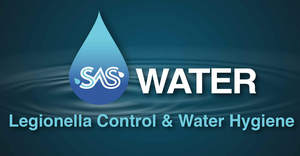

Trade Mark Journal No.2025/016 18 April 2025
UK00004182184 1 April 2025 (1,5,9,11,37,40,41,42,45)

- Class 1
- Bacteria for water treatment; Bacteria for sewage treatment; Bacteria for waste water treatment; Microorganisms for use in water treatment; Industrial chemicals for use in treating cooling water in recirculating cooling systems; Bacterial cultures for wastewater treatment; Sewerage water treatment chemicals; Chemicals for the suppression of the odour of water; Water testing chemicals; Preservatives for maintaining the viability of micro-organisms in cultures [industrial]; Preparations containing bacteria for water treatment; Mercury sulphide; Chemicals for use in the decontamination of polluted sites; Chemicals for the treatment of hot water systems; Chemicals for the purification of water used in swimming pools; Microorganisms for pond maintenance; Water treatment chemicals for use in swimming pools and spas; Filtration control agents for completion fluids for subterranean wells; Chlorine; Water treatment chemicals for use in swimming pools; Ammonia water; Reagents for detecting helicobacter pylori organisms [other than for medical or veterinary purposes]; Additives (Chemical -) for use in the disinfection of water; Diagnostic chemicals for use in antibiotic susceptibility testing [other than for medical use]; Chemicals for use in the prevention of environmental damage to plants; Natural desiccants for cooling by desorbing water vapour; Chemicals for the control of environmental pollution; Deionised water; Water treatment chemicals for use in swimming spas; Chemical analysis kit for testing swimming pool water; Bacterial substances for industrial use; Mixtures of chemicals and microorganisms for sterilizing compost; Reagents for testing water; Mercury sulphate; Microorganisms for the degradation of toxins [other than for medical use]; Liquid chlorine.
- Class 5
- Biocides; Bacteria removers; Algaecide chemicals for swimming pools; Algaecides [chemicals for swimming pool maintenance]; Immunotherapeutic agents for bacterial infections; Pharmaceutical preparations for the prevention of diseases caused by bacteria; Disinfectants for swimming pools; Aquatic algaecide; Germicides; Algaecide for swimming pools; Disinfectants for chemical toilets.
- Class 9
- Water leakage detection alarms; Vapour monitoring apparatus for the detection of leaks; Incubators for bacteria culture; Incubators for bacteria cultures; Water temperature regulators; Laboratory instrument for the detection of pathogens and toxins in a biological sample for research use; Mercury thermometers [other than for medical use]; Laboratory thermometers.
- Class 11
- Water sterilisers; Water sterilizers; Flues for heating boilers; Sterilisation autoclaves; Water chillers; Water heaters and boilers; Thermal oxidizers for industrial air pollution control; Sterilisers; Sanitisers; HVAC systems (heating, ventilation and air conditioning); Air sterilisers; Water boilers; Chlorinating units for water treatment; Air humidifiers [water containers for central heating radiators]; Flues; Sterilization, disinfection and decontamination equipment; Pressurised water reservoirs; Control units [thermostatic valves] for heating installations; Water ionizers; Ultra-violet water sterilisation units for industrial use; Decontamination showers; Induction water heaters; Heat exchangers for the removal of flue gases; Temperature regulators [thermostatic valves] for central heating radiators; Freestanding decontamination showers; Boilers for use in heating systems; Gas boilers for the heating of swimming pools; Water heaters; Water purifiers; Catalytic oxidizers for industrial air pollution control; Industrial humidifiers; Urinal sanitiser units; Water control valves for faucets; Electrical autoclaves for use in sterilization; Circulators [water heaters]; Heating installations for nitrate solutions; Water filtration installations; Water treatment units for aerating and circulating water; Air sterilizers; Recuperators for pre-heating combustion air in heating systems by the use of hot flue gas; Air-source heat pump water heaters; Vehicle HVAC systems (heating, ventilation and air conditioning); Control valves (Thermostatic -) for central heating radiators; Installations for cooling drinking water; Control devices [thermostatic valves] for heating installations; Water heating installations; Heating installations [water]; Water cooling towers; Heating boilers; Temperature sensors [thermostatic valves] for central heating radiators; Water heaters for showers; Gas boilers for water heating; Heat exchangers for the temperature control of drinks being dispensed; Humidifiers.
- Class 37
- Disinfection of premises against bacterial infestation; Disinfection of buildings against bacterial infestation; Disinfection; Disinfection of premises; Cleaning of water supply pipework; Extermination, disinfection and pest control; Prevention of dust ingress to buildings; Maintenance of water pollution control equipment; Inspection of premises to detect woodworm; HVAC (Heating, ventilation and air conditioning) installation, maintenance and repair.
- Class 40
- Chemical treatment of boiler pipework; Water pollution control; Soil, waste or water treatment services [environmental remediation services]; Building dehumidification; Decontamination of subsurface soil sites; Treatment of contaminated soil; Filtration of gases.
- Class 41
- Training services relating to health and safety; Education and training in the field of occupational health and safety; Education and training services in the field of occupational health and safety; Health education; Education in road safety; Health and wellness training; Health club services [health and fitness training]; Providing of training in the field of health care and nutrition; Road safety training; Educational services relating to road safety; Driver safety training; Training services relating to occupational health; Health and fitness club services; Health club [fitness] services; Vocational education relating to home safety; Health club services; Education services relating to health; Health club services [exercise]; Drilling technology safety training.
- Class 42
- Environmental testing services to detect contaminants in water; Microbiological testing; Bacteriology consultancy; Radon detecting; Sampling for contamination; Environmental hazard assessment; Monitoring of water quality.
- Class 45
- Health and safety risk management; Health and safety risk assessment services; Information services relating to health and safety; Consultancy services relating to health and safety; Safety evaluation; Occupational safety consultancy; Safety, rescue, security and enforcement services; Radiation safety consulting; Fraud detection services in the field of health care insurance; Advisory services in relation to safety; Rental of equipment for safety, rescue, security and enforcement; Consulting in the field of workplace safety.
SAS WATER
Preetham Kommula
Lizzie Ward